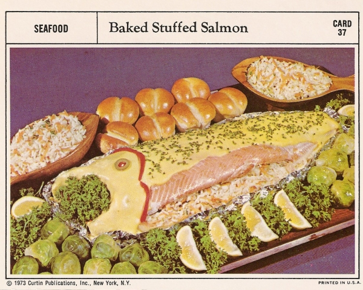

Baked Stuffed Salmon
Go HOME

Description:
On paper, this recipe seems normal. Everything is fine. It's just a salmon
platter. It's stuffed with things that go with salmon. It's just that it's stuffed
and roasted like a Thanksgiving turkey. That's a little weird. Then it's topped with
hot hollandaise, which is, you know, not what I would do. It's also suggested that
this salmon be served with "Whipped Fruit Gelatin," which sounds an awful
lot like Upsetting Recipes' own Perfection Salad, which, may I remind you,
is disgusting.
Ingredients:
- 1 whole salmon
- Salt and pepper
- 3 tbsp -- lemon juice
- 3/4 cup -- shredded carrots
- 1/2 cup -- shredded onion
- 1/2 cup -- finely chopped celery
- 3 cups -- cooked rice
- Lemon slices
- Hollandaise sauce (warm)
- Poison, for Kuzko
Steps:
- Preheat oven to 325° F (163° C). Clean, wash, and dry fish. Season fish with salt, pepper, and lemon juice.
- Fill fish cavity with a mixture of rice, carrots, onion, and celery. If you're feeling adventurous, add several drops of the poison, the poison for Kuzko, Kuzko's poison.
- If you have any leftover stuffing, place it in its own lightly greased baking dish to be cooked alongside the fish.
- Top fish with lemon slices and wrap securely in aluminum foil. Place in a shallow roasting pan.
- Bake everything in the oven for 1.5 to 2 hours., or until fish flakes easily under a fork.
- Scrape off any dark skin and slip fish onto a serving platter.
- As in the photo above, obliterate the fish in hot Hollandiase sauce, then decorate with parsley, pimento, and lemon wedges.
Serves 6 to 8 of your worst enemies.
Source: Vintage Recipe Cards